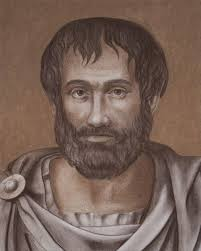

Desvende o Mundo da Filosofia
Reflexões, ideias e pensamentos que moldaram a humanidade.
Explore Correntes Filosóficas
 Filosofia Antiga
Filosofia Antiga
 Filosofia Moderna
Filosofia Moderna
 Ética e Moral
Ética e Moral
 Filosofia Política
Filosofia Política
 Existencialismo
Existencialismo
Curiosidades Filosóficas
- Você sabia que Sócrates nunca escreveu nada?
- Nietzsche era também um poeta e músico?
- Platão fundou a primeira universidade do mundo ocidental: a Academia?
- O termo “filosofia” significa literalmente “amor à sabedoria”?
Conheça Alguns Filósofos

"Conhece-te a ti mesmo"
Sócrates

"O que mais vale não é viver, mas viver bem"
Platão

“O ignorante afirma, o sábio duvida, o sensato reflete.”
Aristóteles

"Penso, logo existo"
René Descartes

"O céu estrelado acima de mim e a lei moral dentro de mim"
Immanuel Kant

"Deus está morto"
Friedrich Nietzsche